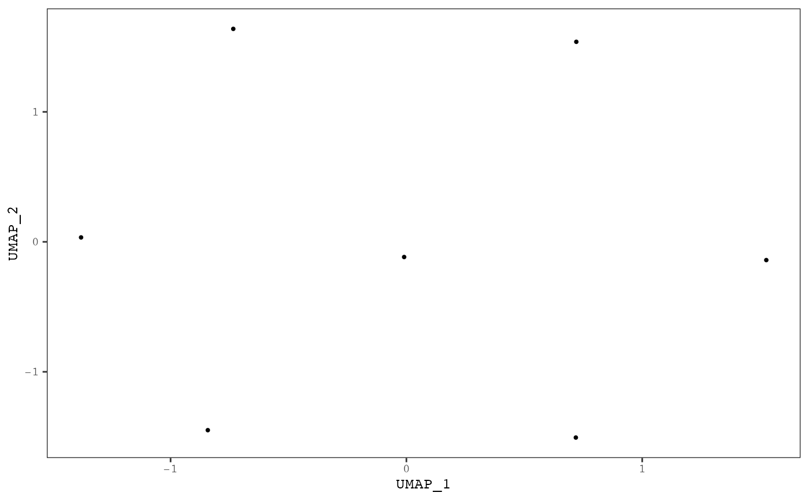

Plots samples on a UMAP scatterplot. Samples can be colored by the levels of mutational signatures or by a annotation variable.
plot_umap(
result,
color_by = c("signatures", "annotation", "cluster", "none"),
proportional = TRUE,
annotation = NULL,
point_size = 0.7,
same_scale = TRUE,
add_annotation_labels = FALSE,
annotation_label_size = 3,
annotation_text_box = TRUE,
plotly = FALSE,
clust = NULL,
legend = TRUE,
strip_axes = FALSE
)A musica_result object generated by
a mutational discovery or prediction tool.
One of "signatures", "annotation", or
"none". If "signatures", then one UMAP scatterplot will be
generated for each signature and points will be colored by the level of
that signature in each sample. If annotation, a single UMAP will
be generated colored by the annotation selected using the parameter
annotation. If "none", a single UMAP scatterplot will be
generated with no coloring. Default "signature".
If TRUE, then the exposures will be normalized
to between 0 and 1 by dividing by the total number of counts for each sample.
Default TRUE.
Sample annotation used to color the points. One used
when color_by = "annotation". Default NULL.
Scatter plot point size. Default 0.7.
If TRUE, then all points will share the same color
scale in each signature subplot. If FALSE, then each signature subplot
will be colored by a different scale with different maximum values. Only
used when color_by = "signature". Setting to FALSE is most
useful when the maximum value of various signatures are vastly different
from one another. Default TRUE.
If TRUE, labels for each group in the
annotation variable will be displayed. Only used if
codecolor_by = "annotation". This not recommended if the annotation is
a continuous variable. The label is plotting using the centriod of each
group within the annotation variable. Default FALSE.
Size of annotation labels. Only used if
codecolor_by = "annotation" and add_annotation_labels = TRUE.
Default 3.
Place a white box around the annotation labels
to improve readability. Only used if codecolor_by = "annotation" and
add_annotation_labels = TRUE. Default TRUE.
If TRUE, the the plot will be made interactive
using plotly. Not used if color_by = "signature"
and same_scale = FALSE. Default FALSE.
Add cluster labels as annotation
Plot legend
Remove axes labels for cleaner looking plots
Generates a ggplot or plotly object
See create_umap to generate a UMAP in a musica result.
data(res_annot)
create_umap(res_annot, "Tumor_Subtypes")
#> The parameter 'n_neighbors' cannot be bigger than the total number of samples. Setting 'n_neighbors' to 7.
plot_umap(res_annot, "none")
